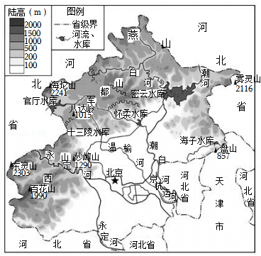

2025年北京市延庆区中考地理试卷 · 选择题 第6、7、8、9、10题
国家文化公园建设工作领导小组印发《长城国家文化公园建设保护规划》。预计2035年，北京长城国家文化公园将全面建成。如图为明长城分布示意图。读图，完成5～7题。

6．长城从古代军事工程转变为现代热门旅游景点，主要因为其具有（ ）
A．历史文化价值B．便利的交通条件
C．军事防御功能D．丰富的自然资源
7．延庆区某学校去八达岭长城进行社会实践合理的交通方式为（ ）
A．管道运输B．公路运输C．航空运输D．水路运输
全国“两会”每年3月在北京召开。如图为北京市地形图。读图，完成8～9题。

8．下列有关北京市的正确描述是（ ）
A．与河北省、天津市和山东省相邻
B．山河相间分布
C．受地势影响，河流自西北流向东南
D．属于亚热带季风气候
9．全国“两会”在北京市召开，反映的北京市城市职能是（ ）
A．政治中心B．国际交往中心
C．文化中心D．科技创新中心
如图为某同学手绘家族人口示意图。读图，完成10～11题。

10．读图可知（ ）
A．家庭养老无负担B．第二代人口数量少
C．劳动人口比重高D．第三代是独生子女